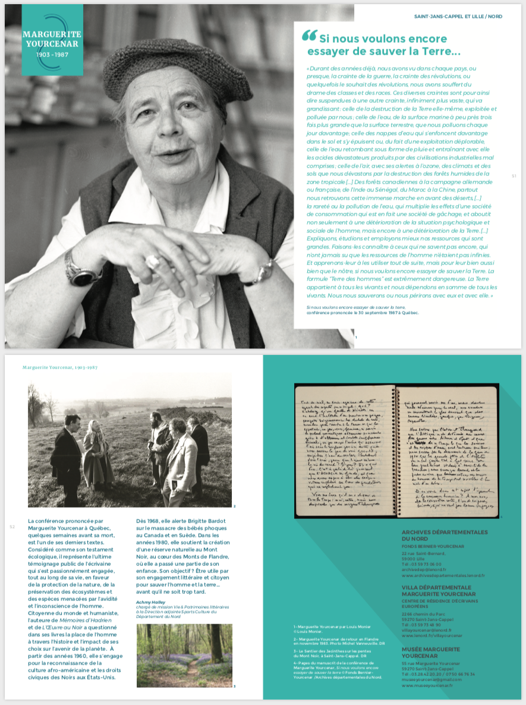

Brochure, Panneaux d'exposition, programme, totem
Janvier - Mars 2018
En janvier 2018, j'ai eu l'occasion de travailler pour le Réseau maisons d'écrivain - Hauts de France pour lequel j'ai réalisé les documents imprimés du festival : Résonances - écrivains et engagements. C'est à partir de l'identité visuelle et de l'affiche réalisées par Emilie Bergogne, que j'ai dû mettre en page les 14 panneaux d'exposition, la brochure 56 pages, le programme A3, les 2 totems et les différents éléments de communication pour les réseaux sociaux.
À partir des textes écrits par les organisateurs de l'événement, Geneviève Tricottet & Nicolas Bondenet ainsi que des différents responsables des maisons d'écrivains en Haut de France, j'ai décliné la charte graphique de l'affiche sur les 14 panneaux au format 2m x 1m.
Il a ensuite fallu adapter la mise en page sur les 56 pages de la brochure. Pour chaque écrivain, une maison et un lieu différent, il a donc fallu rassembler tout le contenu dans ce document format A5.

Proposition de totem 3 faces.

Le festival se déroulant dans plusieurs lieux en Haut de France il a fallu réaliser la carte des différents lieux d'exposition ainsi que le programme détaillé.

Le festival a eu lieu pendant 1 mois du 20 mars au 20 avril 2018. Les panneaux ont pris place dans les différents lieux d'exposition.